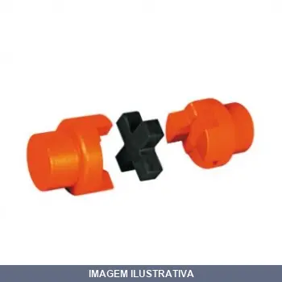
ACOPLADOR CR FC MADEMIL
ACOPLAMENTO MADEFLEX CR 04 Os acoplamentos MADEFLEX CR são compostos por dois cubos simétricos de ferro fundido cinzento, e um elemento elástico alojado entre eles, de borracha sintética de elevada resistência a abrasão. Esta configuração torna apto ao acoplamento MADEFLEX CR ser torcionalmente elástico e flexível em todas as direções, absorvendo vibrações, choques, desalinhamentos radiais, axiais e angulares; protegendo desta forma os equipamentos acoplados. Estes acoplamentos permitem trabalho
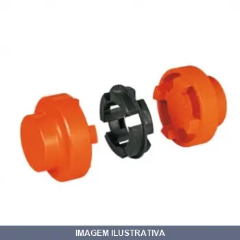
ACOPLADOR GR FC MADEMIL
ACOPLAMENTO MADEFLEX GR 050 Os acoplamentos MADEFLEX GR são compostos por dois cubos simétricos de ferro fundido cinzento, e um elemento elástico alojado entre eles, de borracha sintética de elevada resistência a abrasão. Esta configuração torna apto ao acoplamento MADEFLEX GR ser torcionalmente elástico e flexível em todas as direções, absorvendo vibrações, choques, desalinhamentos radiais, axiais e angulares; protegendo desta forma os equipamentos acoplados. Estes acoplamentos permitem trabalh
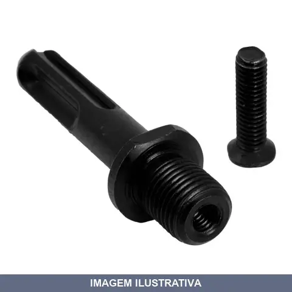
ADAPTADOR SDS-PLUS PARA MANDRIL BRASFORT
Indicação de Uso: Adaptador para acoplamento de mandril roscado em furadeiras com encaixe SDS Plus. Material e Resistência: Corpo em aço. Vantagem Prática: Permite utilizar mandris convencionais 1/2" em ferramentas com encaixe SDS Plus, oferecendo maior versatilidade.

ADAPTADOR SDS-PLUS PARA MANDRIL COM PARAFUSO OF VONDER
Indicação de Uso: Adaptar mandril com rosca de 1/2" 20 fios em máquinas com encaixe tipo SDS Plus (marteletes e furadeiras). Vantagem Prática: Parafuso para travamento da haste no mandril, permitindo uso versátil em máquinas com sistema de encaixe rápido. Restrição Importante: Nunca selecionar a função com impacto ao utilizar em martelos ou marteletes.
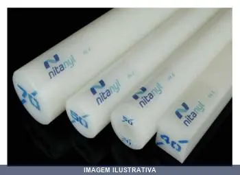
BARRA NITANYL=TECNIL
BARRA DE NITANYL 35 X 1000MM TODAS COM 1 METRO APROXIMADAMENTE 1,22/ 1,16 KG POR BARRA
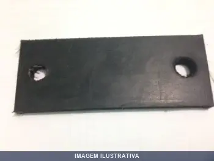
BORRACHA PARA ACOPLAMENTO AÇO MADEMIL
Indicação de Uso: Transmissão de potência entre eixos rotativos, correção de desalinhamentos e absorção de vibrações. Material e Resistência: Borracha sintética de elevada resistência à abrasão, integrada a cubos de ferro fundido cinzento. Temperatura de operação: -20°C a +80°C. Vantagem Prática: Dispensa lubrificação e manutenção, instalação simples, funciona em posições horizontal e vertical.
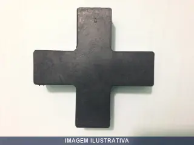
BORRACHA PARA ACOPLAMENTO CR MADEMIL
Indicação de Uso: Elemento elástico para acoplamento de cruzeta tipo Madeflex. Material e Resistência: Borracha sintética de elevada resistência à abrasão, alojada entre cubos de ferro fundido cinzento. Vantagem Prática: Absorve vibrações e choques, flexível em todas as direções, sem necessidade de manutenção ou lubrificação.
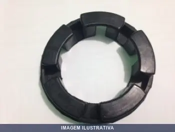
BORRACHA PARA ACOPLAMENTO GR MADEMIL
Elemento elástico em borracha para acoplamento de garras GR-067 Mademil. Diâmetro 62mm, altura 17mm. Material: borracha sintética com elevada resistência à abrasão. Funciona em temperatura de -20°C a +80°C. Absorve vibrações, choques e desalinhamentos, protegendo equipamentos. Não necessita manutenção ou lubrificação.
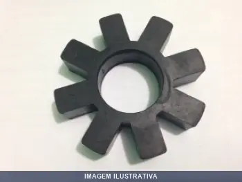
BORRACHA PARA ACOPLAMENTO MN MADEMIL
Indicação de Uso: Elemento elástico para acoplamentos Madeflex em sistemas de transmissão de potência, absorvendo vibrações, choques e desalinhamentos de eixos rotativos. Material e Resistência: Borracha sintética de elevada resistência à abrasão. Vantagem Prática: Flexível em todas as direções, protegendo equipamentos acoplados. Compacto e de baixo peso.

CARVAO 150B L BOSCH CARBONPECAS
CARVAO PARA LIXADEIRA BOSCH 1353 COM 2 PEÇAS REF: 150B

CARVAO 166B ESMERILHADEIRA MAKITA CARBONPECAS
CARVAO ESMERILHADEIRA MAKITA 9027 COM 2 PEÇAS ''166B''

CARVAO 350B LIXADEIRA ESMERILHADEIRA BOSCH CARBONPECAS
CARVAO PARA LIXADEIRA E ESMERILHADEIRA BOSCH 1351 REF: 350B

CARVAO 366B/ ESMERILHADEIRA MAKITA CARBONPECAS
CARVAO PARA ESMERILHADEIRA MAKITA 9027 "366B" " 3661"

CARVAO B ESMERILHADEIRA B&D G. COM CARBONPECAS
CARVAO PARA ESMERILHADEIRA BLACK & DECKER G.730 COM 2 PEÇAS "287B"

CARVAO E MAKITA CARBONPECAS
Carvão para ferramentas elétricas. Componente de desgaste natural para motores elétricos em furadeiras e serras circulares. Substitui carvões gastos mantendo o funcionamento do equipamento. Material condutor que facilita a transmissão de energia no motor.

CARVAO ESMERILHADEIRA B&D/D&W CARBONPECAS
Carvão para esmerilhadeira. Indicação de Uso: Substituição em ferramentas elétricas para trabalhos de desbaste, limpeza e acabamento em superfícies. Material e Resistência: Carvão de alta resistência ao desgaste. Vantagem Prática: Garante funcionamento contínuo da ferramenta durante operações de esmerilhamento.
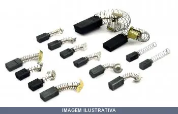
CARVAO ESMERILHADEIRA B&D/D&W COM CARBONPECAS
CARVAO ESMERILHADEIRA BLECK E DECKER E DEW COM 2 PEÇAS "169"

CARVAO ESMERILHADEIRA BOSCH - COM CARBONP
CARVAO ESMERILHADEIRA BOSCH 1701-1 5'' COM 2 PEÇAS REF: 198

CARVAO ESMERILHADEIRA BOSCH CARBONPECAS
CARVAO ESMERILHADEIRA BOSCH REF:1338 COM 2 PEÇAS ''164''

CARVAO ESMERILHADEIRA DWT CARBONPECAS
Indicação de Uso: Carvão de reposição para esmerilhadeira, utilizado em ferramentas rotativas para trabalhos de desbaste, limpeza e acabamento de superfícies. Material e Resistência: Componente de carvão, material condutor apropriado para aplicações em ferramentas elétricas rotativas. Vantagem Prática: Peça de reposição que garante o funcionamento contínuo da ferramenta.

CARVAO ESMERILHADEIRA FERRARI COM CARBONPECAS
Escova de carvão para esmerilhadeira Ferrari. Marca Carbonpeças. Acessório de reposição indicado para manutenção e troca em esmerilhadeiras da marca Ferrari. Compatível com modelos RE54, ES115 e similares. Vendido em par. Medidas aproximadas: 14,2x5,8x4,9mm.

CARVAO ESMERILHADEIRA FERRARI RE54 COM CARBONPECAS
Indicação de Uso: Esmerilhadeira Ferrari ES-115/RE-54 Material e Resistência: Carvão/Grafite Vantagem Prática: Venda por par - duas peças por embalagem

CARVAO ESMERILHADEIRA MAK 9500NH COM CARBONPECAS
Indicação de Uso: Esmerilhadeira angular Makita 9500NH. Material e Resistência: Grafite e carbono nas extremidades, com condutibilidade elétrica. Vantagem Prática: Conduz corrente elétrica e permite movimento do rotor. Substituir quando desgastado até 60% da altura para manter equilíbrio e funcionamento adequado da ferramenta.

CARVAO ESMERILHADEIRA MAKITA 9500NH CARBONPECAS
Escova de carvão para esmerilhadeira Makita 9500NH. Material grafite. Medidas: 12 x 7,9 x 5 mm. Responsável pela condução de corrente elétrica. Requer substituição quando desgastada até 60% de sua altura para manter o desempenho da ferramenta.

CARVAO ESMERILHADEIRA MAKITA CARBONPECAS
Indicação de Uso: Carvão para esmerilhadeira angular Makita. Material e Resistência: Condutor de corrente elétrica com encaixe preciso em seus modelos específicos. Vantagem Prática: Reposição essencial para manutenção corretiva e preventiva, garante funcionamento eficiente da ferramenta.

CARVAO ESMERILHADEIRA ME TUBO COM CARBONPECAS
Indicação de Uso: Substituição de carvões para esmerilhadeiras, garantindo continuidade operacional do equipamento. Material e Resistência: Carvão de alta resistência térmica e mecânica, adequado para esmerilhação. Vantagem Prática: Conjunto com múltiplas peças reduz necessidade de reposições frequentes.

CARVAO ESMERILHADEIRA ME TUBO W7 COM CARBONPECAS
Carvão para esmerilhadeira angular. Conjunto com 2 peças de carvão em carboneto, componente de reposição para manutenção de ferramentas elétricas de abraçadeira. Indicado para trabalhos de desbaste, corte e acabamento em diversos materiais.

CARVAO ESMERILHADEIRA SKIL COM 2CPC CARBONPECAS
CARVAO ESMERILHADEIRA SKILL 42'' COM 2 PEÇAS REF: 299

CARVAO FURADEIRA ARNO/SKIL COM CARBONPECAS
Indicação de Uso: Escova de carvão para furadeira Arno/Skil FIC. Material e Resistência: Carvão com alta condutividade elétrica e resistência ao desgaste. Vantagem Prática: Conduz corrente elétrica da parte estática para a dinâmica, mantendo o funcionamento eficiente do motor da ferramenta.

CARVAO FURADEIRA B&D CARBONPECAS
Indicação de Uso: Carvão para furadeira, componente de desgaste da ferramenta elétrica. Material e Resistência: Carvão prensado, material condutor específico para máquinas rotativas. Vantagem Prática: Substitui componente desgastado, restaurando o funcionamento da ferramenta.

CARVAO FURADEIRA BOSCH CARBONPECAS
Indicação de Uso: Peça de reposição para furadeira Bosch. Material e Resistência: Escova de carvão fabricada com carbono grafite, oferece alta resistência e instalação simples. Vantagem Prática: Prolonga a vida útil do motor através de manutenção técnica adequada. Embalagem com duas unidades.

CARVAO FURADEIRA BOSCH HOBBY CARBONPECAS
CARVAO PARA FURADEIRA BOSCH HOBBY COM 2 PEÇAS "122"

CARVAO FURADEIRA BOSCH SUPER HOB CARBONPECAS
Indicação de Uso: Escovas de carvão para furadeira Bosch Super Hobby. Material e Resistência: Carvão. Vantagem Prática: Vendidas em par (2 unidades) para facilitar a reposição completa.

CARVAO FURADEIRA DW COM 2CPC CARBONPECAS
Indicação de Uso: Escova de carvão para furadeira compatível com modelos DeWalt. Material e Resistência: Carvão com resistência à operação contínua. Vantagem Prática: Pacote contém 2 escovas de reposição para manutenção de ferramenta.

CARVAO FURADEIRA FERRARI COM CARBONPECAS
Jogo de peças em carvão para furadeira. Aplicação em manutenção e substituição de componentes de furadeiras. Material em carvão, indicado para restauração e funcionamento adequado da ferramenta.

CARVAO FURADEIRA HOBBY CARBONPECAS
Escova de carvão para furadeira Bosch Super Hobby. Compatível com modelos 3114, 3219, 3240, 3242, 3246 e outros da série Super Hobby. Medidas: 16 x 8 x 5 mm. Fornecida em par (2 unidades).

CARVAO FURADEIRA MAKITA CARBONPECAS
Indicação de Uso: Peça de reposição para furadeira Makita. Material e Resistência: Composto por grafite, flandres e aço, proporciona condução elétrica eficiente e durabilidade. Vantagem Prática: Encaixe preciso para facilitar instalação. Vendido em par com 2 unidades.

CARVAO FURADEIRA MAKITA CB CARBONPECAS
CARVÃO FURADEIRA MAKITA 70/6404 COM 2 PEÇAS REF: 184

CARVAO FURADEIRA MAKITA CB52/CB56 CARBONPECAS
Indicação de Uso: Reposição em furadeiras Makita CB52/CB56. Material e Resistência: Escova de carvão com grafite, flandres e aço, fabricada para contato elétrico eficiente e durável. Vantagem Prática: Vendida em par com 2 unidades, com encaixe preciso para facilita instalação. Conduz corrente elétrica ao motor garantindo funcionamento correto.

CARVAO FURADEIRA SKIL COM CARBONPECAS
Escova de carvão para furadeira Skil modelo 172. Medidas: 5,0 × 6,8 × 20 mm. Embalagem com 2 peças. Material condutor de eletricidade para excitar e conduzir corrente na ferramenta elétrica.

CARVAO L MAKITA CARBONPECAS
Indicação de Uso: Carvão de reposição para ferramentas elétricas rotativas. Material e Resistência: Fabricado em carvão, material condutor utilizado em motores elétricos. Vantagem Prática: Garante funcionamento adequado da ferramenta através da condução elétrica nos escovas do motor.

CARVAO LIXADEIRA ESMERILHADEIRA DEWALT ORBIT CARBONPECAS
Escova de carvão (carvão para motor) para lixadeira e esmerilhadeira, peça de reposição para o motor elétrico da ferramenta. Aplicação em trabalhos de lixamento, acabamento e desbaste de superfícies em madeira, metal e materiais similares. Componente apropriado para uso contínuo em ferramentas rotatórias de órbita.

CARVAO LIXADEIRA MAKITA CARBONPECAS
Escova de carvão para lixadeira Makita, marca CarbonPeças. Conduz corrente elétrica no motor da ferramenta. Encaixe preciso e boa condutividade. Ideal para reposição em manutenção corretiva ou preventiva.

CARVAO LIXADEIRA POLI B&D / COM CARBONPECAS
Carvão de reposição para lixadeira orbital. Indicação de Uso: substituição em lixadeiras orbitais de 7 polegadas. Material e Resistência: carvão com resistência adequada para operação contínua. Vantagem Prática: mantém o desempenho da ferramenta em lixamento de superfícies.

CARVAO LIXADEIRA POLITRIZ B&D CARBONPECAS
Carvão para lixadeira politriz. Componente de reposição destinado a manutenção e funcionamento de ferramentas elétricas rotativas. Indicado para uso em lixamento e polimento de superfícies diversas. Material condutor para transmissão de corrente elétrica em equipamentos portáteis.

CARVAO LIXADEIRA SIR CARBONPECAS
Indicação de Uso: Carvão de escova para motor elétrico de lixadeira, reposição de peças de desgaste em ferramentas elétricas. Material e Resistência: Carvão grafite, material condutor com resistência ao desgaste por fricção contínua em comutadores. Vantagem Prática: Substitui escovas desgastadas, restaurando o funcionamento e a condutividade elétrica da ferramenta.

CARVAO LIXADEIRA THABOR PEQ COM CARBONPECAS
Escova de carvão para lixadeira e politriz Thabor pequena. Medidas: 22 x 11 x 6,3 mm. Conduz corrente elétrica da parte estática para dinâmica da ferramenta. Requer substituição quando desgastada a 60% da altura. Compatível com modelos PEQ. 1/2 LT (9/12) LF5.

CARVAO MAKITA 4100N CARBONPECAS
Indicação de Uso: Escova de carvão para serra mármore Makita modelo 4100NH, 4100NB e outros equipamentos da série 4100. Material e Resistência: Carvão com terminal redondo, compatível com diversas ferramentas elétricas Makita. Vantagem Prática: Substituição de peça de desgaste que mantém o funcionamento adequado do motor da ferramenta.

CARVAO PLAINA MAKITA CARBONPECAS
Indicação de Uso: Carvão de reposição para plaina elétrica modelo 1900. Material e Resistência: Grafite com condutividade elétrica para operação contínua da ferramenta. Vantagem Prática: Componente consumível que mantém a eficiência elétrica da plaina durante seu funcionamento.

CARVAO RETIFICADEIRA BOSCH CARBONPECAS
Carvão para retificadeira. Componente de desgaste destinado à manutenção e reposição em equipamentos de retificação. Material condutor para transmissão de energia elétrica durante o funcionamento da ferramenta.

CARVAO ROCADEIRA TRAPP TERMINAL FEMEA CARBONPECAS
Carvão (escova) para roçadeira Trapp, modelo 398, terminal fêmea. Peça de reposição para motores de aparadores de grama e roçadeiras elétricas. Embalagem com 10 unidades. Dimensões: 25x10x7 mm. Responsável por conduzir corrente elétrica no motor, necessita substituição regular conforme desgaste.

CARVAO SERRA BOSCH CARBONPECAS
Indicação de Uso: Peça de reposição para ferramentas elétricas Bosch com serras. Material e Resistência: Escova de carvão destinada a conduzir corrente elétrica até o rotor através do coletor do induzido. Vantagem Prática: Substituição periódica garante funcionamento adequado da ferramenta. 180 | 1551

CARVAO SERRA BOSCH MOD CARBONPECAS
Escova de carvão para serra de mármore Bosch, fabricada pela Carbonpeças. Componente essencial do motor universal que conduz a corrente elétrica até o rotor em movimento. Feita com grafite e carbono nas extremidades, responsável pelo contato com o coletor do induzido. Peça de desgaste natural que precisa substituição periódica para garantir funcionamento da ferramenta. Vendida em par com garantia de 90 dias.

CARVAO SERRA ESQ DEWALT CARBONPECAS
Indicação de Uso: Escova de carvão para motor de serra elétrica modelo 358, utilizada na substituição de componentes de motor para manutenção e restauração do funcionamento. Material e Resistência: Carvão de alta durabilidade para componentes elétricos de motor. Vantagem Prática: Peça de reposição que restaura o desempenho adequado do motor da ferramenta.

CARVAO SERRA MAKITA CARBONPECAS
Indicação de Uso: Escova de carvão para serra mármore Makita, peça de reposição para manutenção do motor. Material e Resistência: Carbono grafite e metal, conduz corrente elétrica e resiste ao desgaste. Vantagem Prática: Encaixe preciso nos padrões Makita, instalação prática e propicia funcionamento contínuo da ferramenta.

CARVAO SERRA MAKITA NHK4100 N CARBONPECAS
Escova de carvão para Serra Mármore Makita NHK4100. Referência CB303, modelo CarbonPeças 188G. Compatível com serras de mármore Makita 110V/220V. Dimensões: comprimento 10,9mm, largura 5,0mm, altura com terminal 40mm. Peça de reposição essencial para manutenção do equipamento.

CARVAO SERRA MARMORE DEWALT COM CARBONPECAS
Indicação de Uso: Escova de carvão (carvão para motor) de reposição para serra mármore Dewalt, utilizada para contato elétrico no motor. Material e Resistência: Composição em carvão, própria para suportar o atrito e a passagem de corrente durante o funcionamento do motor. Vantagem Prática: Peça de reposição vendida em par, facilitando a manutenção do equipamento.

CARVAO SERRA MARMORE DWT /861B CARBONPECAS
Indicação de Uso: Reposição para serra mármore DeWalt/DWT DW 861B. Material e Resistência: Carvão condutor de corrente elétrica para ferramentas elétricas. Vantagem Prática: Reposição com desgaste da escova original, necessária para manutenção periódica da ferramenta.

CARVAO SERRA MARMORE DWT COM CARBONPECAS
Indicação de Uso: Reposição de escovas de carvão em motor elétrico de serra mármore DWT. Material e Resistência: Escovas de carvão (carbon) para contato elétrico com o comutador do motor. Vantagem Prática: Acompanha 2 peças de carvão para reposição, estendendo a vida útil da serra.

CARVAO SERRA MARMORE FERRARI CARBONPECAS
Indicação de Uso: Escova de carvão para serra mármore Ferrari. Material e Resistência: Eletrografite. Vantagem Prática: Embalagem com 2 unidades para reposição rápida.

CARVAO SERRA MARMORE FERRARI COM CARBONPECAS
CARVAO SERRA MARMORE FER.R. 950 COM 2 PEÇAS REF:271

CARVAO SERRA MARMORE FERRO COM CARBONPECAS
Indicação de Uso: Reposição para serras mármore de diversas marcas. Material e Resistência: Composto por grafite e carbono, condutor elétrico para transferência de corrente em peças rotativas. Vantagem Prática: Fácil substituição e encaixe compatível com diversos modelos de serra mármore.

CARVAO SERRA MARMORE MAKITA 4100NB COM CARBONPECAS
Indicação de Uso: Peça de reposição para manutenção de serra mármore Makita modelo 4100NB. Material e Resistência: Carvão resistente ao desgaste. Vantagem Prática: Restaura a condução de corrente do motor, mantendo o desempenho da ferramenta.

CARVAO SERRA MARNORE MAKITA 4100NH CARBONPECAS
Indicação de Uso: Escova de carvão para reposição em Serra Mármore Makita 4100NH e modelos compatíveis. Apresentação: 1 par de escovas. Material e Resistência: Fabricado em carvão. Vantagem Prática: Substituição prática que mantém a performance e prolonga a vida útil da ferramenta elétrica.

CARVAO SERRA TICO B&D COM2 CARBONPECAS
Escovas de carvão para serra tico-tico Black & Decker. Conjunto com 2 peças para reposição e manutenção da ferramenta. Indicado para restauração de desempenho da serra tico-tico. Fabricante: Carbonpeças.

CARVAO TANQUINHO ARNO COM CARBONPECAS
Escova de carvão para tanquinho Arno. Peça de reposição compatível com modelos Arno. Composição em carvão. Cada unidade contém um par de escovas para substituição.

CHAVE MANDRIL / - SC BRASFORT
Chave de mandril para fixação e soltura de brocas em furadeiras, utilizada para apertar e soltar o mandril da ferramenta. Ideal para manutenção geral e trabalhos com furadeiras. Construída em aço forjado, oferece durabilidade e resistência em operações de aperto e desaperto contínuos.
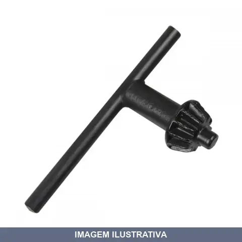
CHAVE MANDRIL LOTUS
Indicação de Uso: Fixação e soltura de brocas e acessórios em ferramentas rotativas como furadeiras e politrizes. Material e Resistência: Construído em aço, oferece durabilidade para uso repetido. Vantagem Prática: Chave de mandril tipo T com catraca dentada, utilizada para apertar e soltar o mandril, travando as brocas com segurança.
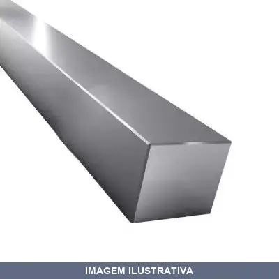
CHAVETA B X500 CENTERROL
Indicação de Uso: Chaveta para transmissão de movimento e torque em eixos e cubos, utilizada em máquinas, motores e equipamentos industriais. Material e Resistência: Aço, oferece resistência mecânica para aplicações de força. Vantagem Prática: Fixação segura e desmontagem facilitada de componentes rotativos.
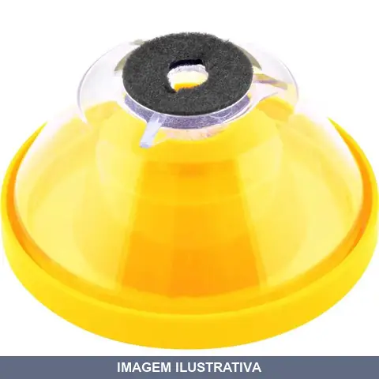
COLETOR DE PO PARA FURADEIRA VONDER
Indicação de Uso: Adaptação em furadeiras para armazenagem de resíduos produzidos durante a perfuração em alvenaria, concreto e madeira. Compatível com brocas de 4,0 a 10,0 mm. Material e Resistência: Reservatório com capacidade de 110 ml. Alimentação por 2 pilhas AA (1,5 V). Corpo com espuma que encosta na parede durante a perfuração. Vantagem Prática: Mantém o ambiente limpo durante o trabalho e facilita a coleta eficiente de resíduos, com sistema de fixação por contato e tampa para limpeza.
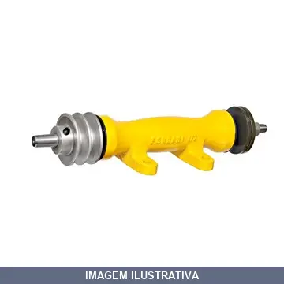
EIXO PARA SERRA CIRCULAR FERRARI
Eixo para serra circular, componente de transmissão de movimento rotativo destinado a máquinas e equipamentos de corte. Indicado para substituição e manutenção de serras circulares. Material em aço, resistente ao desgaste durante operações contínuas de corte. Vantagem prática: facilita o funcionamento adequado da serra circular.
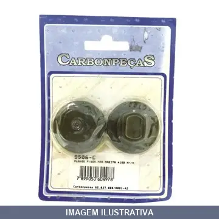
FLANGE INTERNO EXTERNO SERRA MAKITA 9506
Flange interno e externo para serra. Componente de fixação destinado à retenção e alinhamento de discos de corte em serras circulares. Material em metal com resistência adequada para aplicações em corte de materiais diversos.
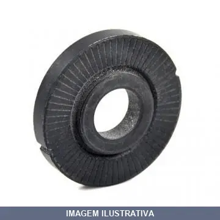
FLANGE INTERNO M (DIN) MAKITA
Flange interno rosca métrica para fixação em furadeiras e esmerilhadeiras. Indicação de Uso: Substituição e manutenção de flange de fixação em esmerilhadeiras e similares. Vantagem Prática: Possibilita fixação segura de discos abrasivos na ferramenta.
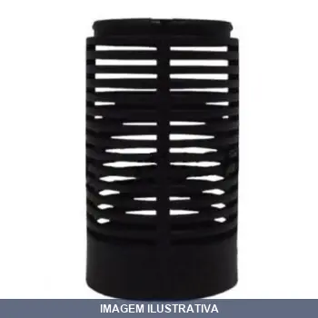
GRADE FECHADA SARLO BETTER
Peça de reposição para motobombas Sarlo Better. Quando conectada à entrada de água, previne a sucção de sujeira grossa e pequenos objetos. Compatível com todos os modelos de motobomba Sarlo Better. Pode ser utilizada em conjunto com a grade aberta para aumentar a área de captação.

GRAXEIRA BSP 28F /845RF
C1/8 45 GAS 3/8 - GRAX ANG. C1/8 BSP 28 FIOS AÇO ZINCADO

GRAXEIRA BSP F C1/890GAS RF
Graxeira para aplicação de graxa em sistemas de lubrificação. Equipada com conexão BSP para acoplamento em linhas hidráulicas e pneumáticas. Indicada para uso em manutenção de máquinas, equipamentos industriais e aplicações gerais de lubrificação.
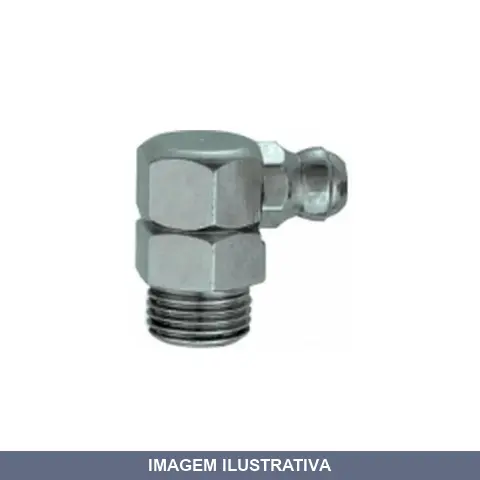
GRAXEIRA BSP GAS F RF
Indicação de Uso: Lubrificação centralizada de equipamentos e máquinas industriais, agrícolas e automotivas em pontos de difícil acesso. Material e Resistência: Corpo em metal resistente à pressão, com câmara de armazenamento de graxa. Vantagem Prática: Conexão rosqueada permite instalação fixa em sistemas de lubrificação automática e controlada.

GRAXEIRA M06 MA PASSO RF
Indicada para facilitar a lubrificação em máquinas e equipamentos em geral. Evita o retorno da graxa e protege o ponto de lubrificação de impurezas do ambiente externo. Material: aço com acabamento zincado. Rosca métrica.

GRAXEIRA M06 MA6MMX1 CM690 RF
Indicada para facilitar a lubrificação em máquinas e equipamentos em geral. Evita o retorno da graxa e protege o ponto de lubrificação de impurezas do ambiente externo. Material: aço com acabamento zincado. Rosca métrica.
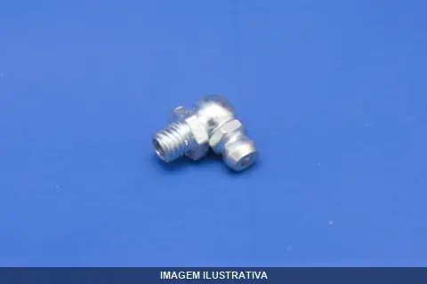
GRAXEIRA M08 MA8MMX1 M890 RF
Graxeira de aplicação manual para lubrificação de máquinas e equipamentos. Equipamento portátil destinado ao fornecimento controlado de graxa em pontos de lubrificação. Ideal para manutenção e operação em máquinas industriais, automotivas e equipamentos diversos que requerem lubrificação periódica.
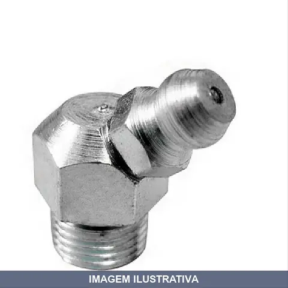
GRAXEIRA M08 MB PASSO M845 RF
Graxeira rosqueável para aplicação de lubrificantes em máquinas e equipamentos. Rosca M08 com passo 1, apropriada para sistemas de lubrificação centralizada. Facilita a aplicação controlada de graxa em pontos de lubrificação de difícil acesso.

GRAXEIRA M10 MB PASSO M1045 RF
Graxeira para rosca métrica M10 com passo 1,0 mm, tipo MB. Indicada para facilitar a lubrificação em máquinas e equipamentos em geral. Evita o retorno da graxa e protege o ponto de lubrificação de impurezas do ambiente externo. Possui acabamento zincado, proporcionando maior resistência à oxidação e corrosão.

GRAXEIRA M10 MB10MMX1 CM10 RF
Graxeira manual para aplicação de lubrificantes em pontos de lubrificação. Rosca métrica M10 com entrada compatível para sistemas de lubrificação centralizada. Indicada para máquinas, equipamentos industriais e manutenção em geral. Proporciona controle preciso na distribuição de graxa nos pontos de engrazamento.

GRAXEIRA RETA C GAS BSP RF
Graxeira reta para lubrificação centralizada de equipamentos e máquinas. Conexão rosqueada BSP, indicada para sistemas de graxa sob pressão. Aplicação em manutenção industrial e mecânica onde se requer alimentação controlada de lubrificante.

GRAXEIRA RETA M06 MA 6MMX1 M6R-GRAX RF
Graxeira reta com rosca métrica para aplicação em sistemas de lubrificação. Permite injeção de graxa em pontos de articulação e movimento de máquinas e equipamentos. Facilita a manutenção preventiva e prolonga a vida útil de componentes móveis.

GRAXEIRA RETA M08 MB 8MMX1 M8R-GRAX RF
Indicação de Uso: Lubrificação de máquinas, equipamentos e sistemas mecânicos em geral. Material e Resistência: Corpo em metal, apropriado para aplicações industriais e de manutenção. Vantagem Prática: Conexão reta facilita o acesso em espaços compactos e instalação direta em pontos de lubrificação.

GRAXEIRA RETA M10 MB 10MMX1 M10R RF
Indicação de Uso: Lubrificação e abastecimento de graxa em equipamentos e máquinas. Material e Resistência: Construção em metal com rosca M10, adequada para sistemas hidráulicos e mecânicos. Vantagem Prática: Facilita a aplicação de graxa de forma reta e precisa em pontos de lubrificação de difícil acesso.

GRAXEIRA RETA R GAS 28F BSP RF
Graxeira reta com conexão BSP, rosca 28 fios. Indicação de Uso: Lubrificação de máquinas, equipamentos industriais e chassis de veículos. Material e Resistência: Aço zincado com resistência à corrosão. Vantagem Prática: Facilita aplicação precisa de graxa em pontos de difícil acesso.
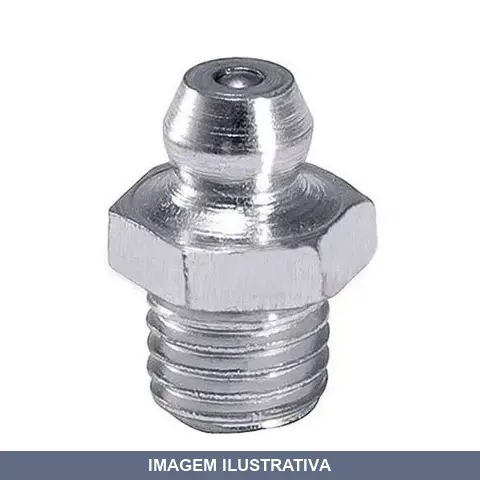
GRAXEIRA RETA UNF 24F REF3/8R RF
Graxeira reta com rosca 3/8 UNF. Indicação de Uso: aplicação de graxa em articulações, rolamentos e mecanismos de máquinas e equipamentos. Vantagem Prática: facilita a lubrificação em pontos de difícil acesso através do sistema de rosca.

GRAXEIRA RETA UNF F /16R RF
Componente de lubrificação com rosca UNF reta, indicada para aplicação de graxa em pontos de difícil acesso de máquinas e equipamentos industriais, automotivos e agrícolas. Fabricada em aço com resistência à corrosão. Compatível com bombas de graxa manuais e pneumáticas.

GRAXEIRA RETA UNF F RF
Graxeira reta com rosca 1/4 UNF para aplicação em máquinas, equipamentos e chassis que requerem lubrificação pontual. Indicada para sistemas de encaixe rápido em pontos de engrase. Material em aço resistente à corrosão. Facilita a aplicação de graxa em locais de difícil acesso através de acoplamento rápido.

GRAXEIRA UNF 24F RF
3/845 - UNF- GRAX . ANG. 3/8 45UNF 24 FIOS AÇO ZINCADO

GRAXEIRA UNF 28F RF
C1/4 45 - GRAX ANG. C1/4 45 UNF 28 FIOS AÇO ZINCADO

GRAXEIRA UNF F C RF
Indicação de Uso: Aplicação de graxa em equipamentos, máquinas e componentes mecânicos que utilizam conexão 1/4 UNF. Material e Resistência: Construção em aço com rosca UNF 28, resistente à corrosão e adequada para uso em ambientes variados. Vantagem Prática: Facilita a lubrificação de pontos de graxa de forma precisa e controlada.

GRAXEIRA UNF F RF
Graxeira para aplicação de graxa em pontos de lubrificação. Rosca 5/16 UNF com ângulo de 90 graus. Estrutura resistente para uso em máquinas, equipamentos e sistemas mecânicos que requerem lubrificação regular. Facilita o acesso a áreas de difícil alcance através de seu design angular.
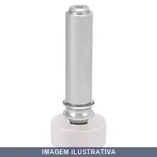
GUIA LATERAL PP TOLEMAT
Indicação de Uso: Guia lateral para sistemas de deslizamento e movimentação em móveis, gavetas e painéis. Material e Resistência: Fabricado em polipropileno (PP), oferecendo resistência a impactos e durabilidade em uso contínuo. Vantagem Prática: Facilita o deslocamento suave de componentes móveis e contribui para o alinhamento estrutural de montagens.
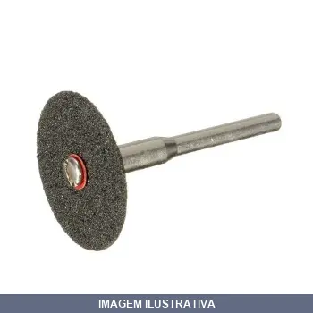
HASTE PARA MINI DISCO CORTE PFERD
HASTE PARA MINI DISCO DE CORTE DE RETIFICAS 1/4 REF: BO 6/10 0-4 NUMERO DO ARTIGO: 33512000 TAMANHO DA HASTE: 6MM TAMANHO DO FURO PARA FERRAMENTA: 10MM Acessório para fixar pequenos discos de corte abrasivo em retíficas retas. Versão PFERD robusta com máxima resistência à ruptura da haste. Ao utilizar esta árvore de fixação, favor observar a rotação máxima permitida conforme instrução do produto a ser utilizado.

HASTE PARA SERRA COPO 11CMX25,4MMX SDS-PLUS LOTUS
Haste para serra copo com encaixe SDS-Plus, indicada para furação em alvenaria, concreto e materiais similares. Permite o uso de brocas tipo serra copo em perfuratrizes e furadeiras compatíveis com sistema SDS-Plus. Proporciona fixação segura e estável durante a perfuração.
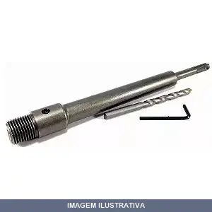
HASTE PARA SERRA COPO 25CMX25,4MMX SDS-PLUS LOTUS
Haste adaptadora para serra copo com encaixe SDS Plus. Fabricada em aço cromo vanádio temperado, proporcionando resistência à oxidação e maior durabilidade. Indicada para uso com serras copos de videa de 35 a 105mm. Compatível com marteletes equipados com encaixe SDS Plus.
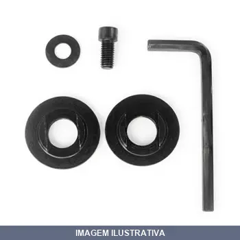
KIT PARAFUSO PARA SERRA MARMORE LOTUS
Indicação de Uso: Acessório para serra mármore, compatível com diversos modelos de todas as marcas. Material e Resistência: Composto por par de flange 40mm (macho e fêmea), parafuso Allen, arruela 20mm e chave Allen 6mm. Vantagem Prática: Mantém a fixação segura do disco e demais componentes, facilitando a troca e manutenção da serra.

MANDRIL /8XB16 CONICO BRASFORT
Mandril cônico com corpo em aço temperado para fixação de brocas e alargadores. Indicado para furadeiras, parafusadeiras e máquinas operatrizes. Aperto por chave, com castanhas temperadas para firmeza na fixação de ferramentas de variados diâmetros.

MANDRIL /8XB18 CONICO BRASFORT
Mandril cônico com corpo em aço para fixação de brocas e pontas em furadeiras, parafusadeiras e tornos. Sistema de aperto com chave para fixação firme e segura. Indicado para trabalhos em máquinas-ferramentas e bancadas de trabalho.

MANDRIL 10MMX UNF COM CHAVE BRASFORT
Mandril com chave Brasfort para fixação de brocas e acessórios em furadeiras. Fixa brocas com firmeza e centralização. Indicado para furadeiras manuais e máquinas estacionárias profissionais. Corpo em aço. Sempre apertar os três furos para fixar a broca corretamente.

MANDRIL 13MMX UNF COM CHAVE BRASFORT
Mandril com chave para fixação de brocas e ferramentas em furadeiras e equipamentos rotativos. Indicação de Uso: trabalhos de furação, usinagem e montagem. Vantagem Prática: chave inclusa facilita o aperto e soltura rápida da ferramenta.
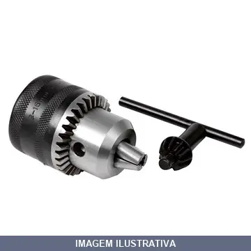
MANDRIL 16P PESADO ROHM
Mandril porta-broca tipo Prima com aperto por chave. Capacidade de fixação de brocas de 1 a 16 mm. Acoplamento cônico. Destinado a trabalhos pesados e contínuos em máquinas operatrizes, furadeiras estacionárias e bancadas. Construção conforme norma DIN 6349. Coroa robusto em aço carbono, dentada e temperada. Castanha temperada com rosca incorporada que proporciona movimento suave e aperto.
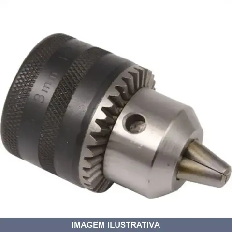
MANDRIL 20P J3 CONICO PESADO ROHM
Indicação de Uso: Mandril cônico para fixação de peças e ferramentas em máquinas-ferramenta, como furadeiras e tornos. Material e Resistência: Construção pesada em ferro fundido, resistente a esforços repetitivos. Vantagem Prática: Permite rápida troca de acessórios e centralização precisa de peças de trabalho.
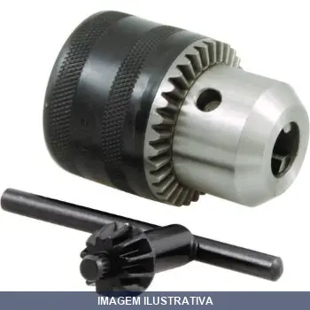
MANDRIL AP RAPIDO 10MMX 24UNF BRASFORT
Mandril de aperto rápido para furadeiras e parafusadeiras. Sistema de aperto manual sem chave, permitindo troca ágil de brocas e acessórios. Corpo em aço com revestimento em plástico, oferecendo resistência e durabilidade. Compatível com brocas de 0,8 a 10 mm e rosca de 3/8" (24 UNF).

MANDRIL AP RAPIDO 13MMX 20UNF BRASFORT
Mandril de aperto rápido para fixação de brocas e ferramentas. Indicado para uso em furadeiras e outras máquinas-ferramenta. Permite troca rápida de acessórios sem necessidade de ferramentas. Material resistente para trabalhos em madeira, metal e alvenaria.
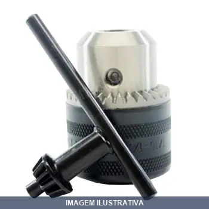
MANDRIL BOSCH
Mandril com chave (tipo engrenagem) para furadeiras e ferramentas rotativas. Componente essencial para fixação e troca de brocas e acessórios em trabalhos de perfuração, marcenaria e construção. Material em metal, com fixação dos acessórios por meio de chave dentada, oferecendo retenção segura durante o uso.
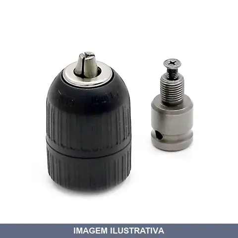
MANDRIL COM ADAPTADOR PARA CHAVE DE IMPACTO FG8010K FORT
Indicação de Uso: Adaptador que permite acoplar mandril de aperto rápido a chaves de impacto à bateria, pneumáticas ou com fio, convertendo-as em ferramenta de furação. Ideal para furar e alisar furos. Material e Resistência: Adaptador em metal; mandril com corpo externo emborrachado, aperto rápido, rosca 20 UNF, resistente a alto torque. Vantagem Prática: Expande a versatilidade da chave de impacto, permitindo trabalhos de furação sem necessidade de furadeira adicional.
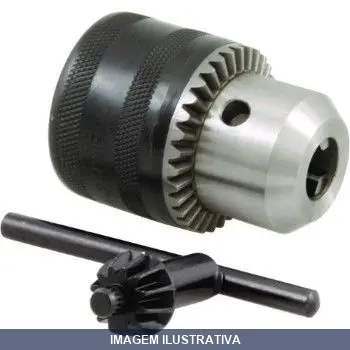
MANDRIL COM CHAVE 20UNF PLUS LOTUS
Mandril universal com chave para furadeiras profissionais. Rosca 1/2" x 20 UNF, capacidade de 1,5 a 13mm. Construído em aço carbono com castanhas temperadas. Coroa dentada apoiada sobre esferas para facilitar abertura e fechamento. Acompanha chave de mandril para aperto firme e seguro da broca.
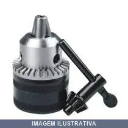
MANDRIL COM CHAVE 24UNF PLUS LOTUS
Mandril com chave para rosca 3/8" x 24 UNF. Características: coroa dentada apoiada sobre esferas para facilitar abertura e fechamento das castanhas. Castanhas de aço carbono temperado. Aplicação: furadeiras manuais, de impacto, de coluna, magnética, de bancada e pneumáticas; fresadoras, cabeçotes de rosqueamento, tornos e centros de usinagem.

MANDRIL UNF BRASFORT
Mandril de aperto para fixação e centragem de peças em máquinas-ferramentas. Rosca 5/8" com 16 filetes por polegada (UNF). Aplicável em furadeiras, fresadoras e tornos para trabalhos de usinagem, perfuração e torneamento. Proporciona fixação segura e precisa de brocas, fresas e outros acessórios durante a operação.

MOLA DE COMPRESSAO COD GK MOLAS
Mola de compressão para aplicações gerais em máquinas, equipamentos e estruturas que necessitam de força restauradora. Indicação de Uso: Compressão vertical com retorno elástico. Material e Resistência: Aço de mola temperado. Vantagem Prática: Fornece resistência e durabilidade em ciclos repetidos de compressão.
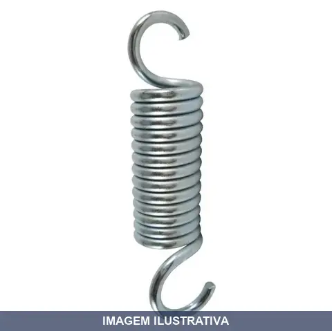
MOLA DE TRACAO COD GK MOLAS
Mola de tração para aplicações gerais de fixação, suspenção e sistemas de retorno. Indicada para máquinas, equipamentos industriais e dispositivos que exigem força de puxamento. Fabricada em aço carbono de alta resistência, oferece durabilidade em uso contínuo.

PECA DE REPOSICAO MOLA INOX
Mola inox de reposição para aplicações gerais em ferragens e equipamentos. Material: aço inoxidável com excelente resistência à corrosão. Indicada para substituição em sistemas que utilizam molas helicoidais de compressão ou tração.
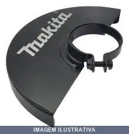
PROTETOR PARA DISCO DE CORTE DIAMANTADO MAKITA
Indicação de Uso: Proteção para disco de corte diamantado em serras circulares e equipamentos de corte. Protege o operador contra projeção de fragmentos durante o corte de materiais duros como concreto, pedra e alvenaria. Material e Resistência: Estrutura em metal resistente à abrasão e impactos. Vantagem Prática: Aumenta a segurança durante operações de corte, reduzindo riscos de acidentes com fragmentos.
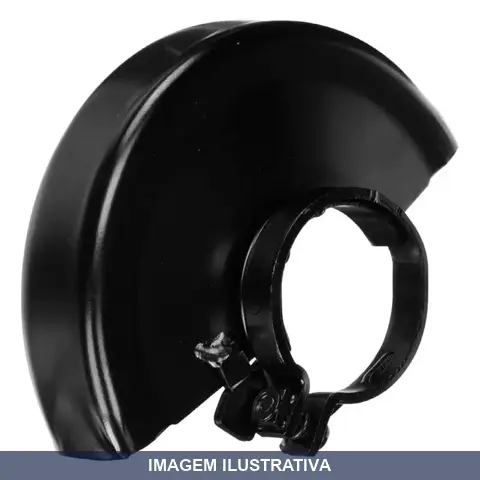
PROTETOR PARA DISCO MAKITA
Indicação de Uso: Acessório protetor para esmerilhadeiras angulares Makita, indicado para proteger o disco durante o trabalho e resguardar a segurança do operador. Vantagem Prática: Mantém a integridade do equipamento e possibilita trabalhos com discos de corte com maior segurança. Compatível com diversos modelos de esmerilhadeiras Makita de diferentes tamanhos.
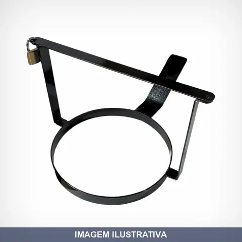
SUPORTE PARA CONE FERRAR
Indicação de Uso: Suporte estruturado para fixação e armazenamento de cones de sinalização em ambientes internos e externos. Material e Resistência: Construído em material resistente, apropriado para suportar o peso e a estabilidade do cone. Vantagem Prática: Mantém cones organizados e facilmente acessíveis, evitando quedas e danos.

SUPORTE S C 152MMX D-17186 MAKITA
Suporte para serra copo com broca piloto. Indicação de Uso: fixação e centralização em furadeiras e perfuratrizes para trabalhos de furação em chapas metálicas, madeira e plástico. Vantagem Prática: permite maior precisão e estabilidade durante o uso de serras copo.

SUPORTE S C 210MMX (T10) BRASFORT
Suporte (mandril) para serra copo, compatível com serras de 32 a 210mm, encaixe 3/8". Material em aço com acabamento que oferece resistência à corrosão. Acompanha broca piloto, facilitando o início do corte em madeira, drywall ou metal.
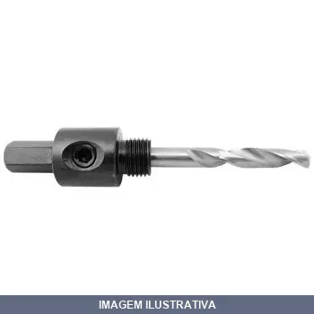
SUPORTE S C 30MMX (T1) BRASFORT
Indicação de Uso: Suporte (arbor) para acoplar serra copo de 14 a 30mm em furadeira, com encaixe de 3/8 e broca piloto para centralização do corte. Material e Resistência: Construído em aço, oferece resistência adequada para aplicações de furação. Vantagem Prática: Facilita a instalação e mantém a serra copo alinhada e segura durante o uso.
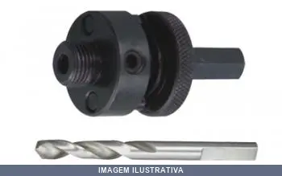
SUPORTE S C 30MMX D-17170 MAKITA
Suporte de fixação para serra copo com broca piloto integrada. Indicação de Uso: Fixação e posicionamento de serras copo em furadeiras e perfuratrizes. Vantagem Prática: Garante alinhamento preciso e estabilidade durante operações de furo em materiais diversos.
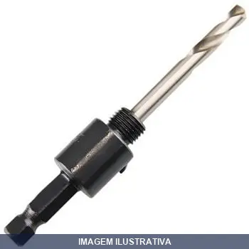
SUPORTE S C KA1-S STARRETT
Suporte de fixação específico para serra copo, com encaixe padronizado. Indicação de Uso: fixação e posicionamento de serras copos em furadeiras e máquinas de furo. Vantagem Prática: permite troca rápida e fácil da serra, mantendo precisão de centralização.
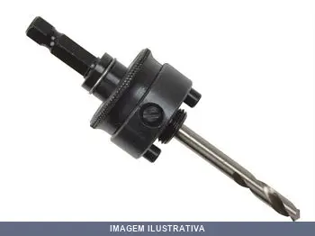
SUPORTE S C KA10-S STARRETT
Suporte de fixação para serra copo com rosca de encaixe. Indicação de Uso: fixação e posicionamento de serras copos em furadeiras e máquinas de corte. Vantagem Prática: permite troca rápida e fácil da serra, com excelente centragem e estabilidade durante a operação.